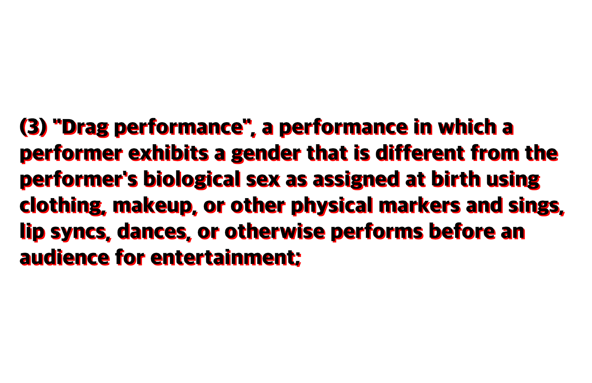

Dissecting The Anti-Drag Movement
15 January 2023

Text from HB498 in Missouri
With anti-LGBT+ rhetoric on the rise, opposition to drag shows is too. This opposition mainly manifested as protests and harassment directed at family-friendly drag shows and drag queen story hours. But things have been escalating recently, right-wing lawmakers across the United States have introduced legislation to restrict drag shows and sometimes gender nonconformity in general. Some of these laws are dangerous and would heavily limit transgender rights and freedom of expression if passed.
Opposition to drag events, family-friendly ones in particular started around mid-2022. In the wake of the "don't say gay" bill and moral panic around transgender people, accusing LGBT+ people of grooming and sexualizing kids was all the rage. Many drag events began to be targeted. GLAAD reported 141 instances of anti-LGBT+ protests targeting drag events across 47 states in 2022.
Some of this activity involved violence and threats. For example, a restaurant hosting a drag event was evacuated after a hoax bomb threat, and a shop was hit with an arson attack for hosting a similar event. Some anti-drag protests even featured far-right groups like the Proud Boys and people with Nazi flags.
This happened in parallel with right-wing media targeting drag events and LGBT+ people in general.
When state legislative sessions started in 2023, it was the perfect storm for anti-drag legislation. According to LGBT+ activist Alejandra Caraballo, 12 anti-drag bills have been introduced across the US. With the legislative season just beginning, more are likely to come.
These bills generally stop minors from being able to see drag shows by placing restrictions on the venue. The bills can be broken into 2 types, bills that restrict drag shows and gender nonconformity with sexual themes and bills that restrict ANY drag shows and gender nonconformity regardless of the context.
An example of the first kind of bill is SB43 from Arkansas. It defines a drag performance as a performance where the performer "exhibits a gender identity that is different from the performer's gender assigned at birth using clothing, makeup, or other accessories that are traditionally worn by members of and are meant to exaggerate the gender identity of the performer's opposite sex." To meet the definition, the performer "sings, lip-synchs, dances, or otherwise performs before an audience of at least two (2) persons for entertainment." The performance also must be one "that is intended to appeal to the prurient interest."
While this bill and others like it seem fine on the surface, they still have some issues.
First of all these bills are useless, states, where these bills are being passed already, have provisions stopping minors from seeing sexually oriented performances in general.
Second, these bills are stigmatizing for drag performers, transgender people and gender non-conforming people in general. Instead of regulating sexual performances with laws in the book, lawmakers pushing bills like SB43 are singling people out.
Third, some of these bills have vague definitions of what sexual performance is. If someone already buys into the myth that LGBT+ people are grooming kids, then they might interpret any drag events to fall under a vague definition of sexual.
This leads to the final problem. If a law has a vague or abusable definition, it can have a chilling effect on people. The fear of being prosecuted even if it would be inaccurate could compel people to not host any drag events, even if they are non-sexual ones.
Because these laws sometimes include transgender and gender non-conforming people, any effect a law could have on drag events could happen to those groups too.
While all of this is problematic, it is nothing compared to the dangers of the second type of bill. This type would restrict any drag show and performance with transgender or gender non-conforming people.
An example of this would be HB498 from Missouri. It defines a drag performance as "a performance in which a performer exhibits a gender that is different from the performer's biological sex as assigned at birth using clothing, makeup, or other physical markers and sings, lip syncs, dances, or otherwise performs before an audience for entertainment."
Not only do these bills share many of the issues the first type has, but some of them would also censor drag performers, transgender and gender-nonconforming people from public life. Bills like HB498 rely on the faulty assumption that all drag shows and performances with transgender people are inherently sexual. This would be a huge step backward for LGBT+ rights and freedom of expression.
These bills share some similarities with cross-dressing bans, laws that were passed in the late 1800s and early 1900s that stopped a person from wearing clothing that aligned with the opposite sex of that person. One similarity the second type of bill and these laws share is a good thing, both have many legal issues. Beginning in the 1960s, criminal defendants and civil litigants began to defeat cross-dressing bans.
One argument that was useful in the past and may still be useful now is that anti-drag bills (mainly the second type) violate the First Amendment's guarantee of freedom of speech.
Another issue with the second type of today's bills is that they might violate the Equal Protection Clause by discriminating based on sex and transgender status.
Even though these bills are harmful, they are not guaranteed to pass. As a community, we must stand up to this legislation and oppose discrimination. Some things that can be done are: contacting your lawmaker, showing up at your state capitol to oppose these bills, supporting local LGBT+ groups and sharing this article.
(Nothing on this page is legal advice)
https://www.glaad.org/blog/glaad-report-drag-events-faced-least-124-protests-and-significant-threats-2022
https://countingcrowds.org/2022/12/30/review-of-right-wing-u-s-protest-activity-in-2022/
https://www.dragstoryhour.org/
https://www.hrc.org/press-releases/new-report-anti-lgbtq-grooming-narrative-surged-more-than-400-on-social-media-following-floridas-dont-say-gay-or-trans-law-as-social-platforms-enabled-extremist-politicians-and-their-allies-to-peddle-inflamatory-discriminatory-rhetoric
https://www.mediamatters.org/fox-news/arson-attack-tulsa-donut-shop-hosting-drag-event-follows-right-wing-media-campaign-fear
https://www.wbtw.com/news/grand-strand/myrtle-beach/hoax-bomb-threat-in-myrtle-beach-leads-to-evacuation-of-drag-brunch-event/
https://www.kxan.com/news/local/pflugerville/photo-shows-group-with-nazi-flag-protesting-at-pflugerville-drag-brunch/
https://www.mediamatters.org/fox-news/doom-groom-fox-news-has-aired-170-segments-discussing-trans-people-past-three-weeks
https://docs.google.com/spreadsheets/d/1fTxHLjBa86GA7WCT-V6AbEMGRFPMJndnaVGoZZX4PMw/
https://legiscan.com/AR/text/SB43/id/2626885
https://legiscan.com/MO/bill/HB498/2023
https://www.cambridge.org/core/journals/law-and-history-review/article/before-equal-protection-the-fall-of-crossdressing-bans-and-the-transgender-legal-movement-196386/B3EDFE10CC12E8BF140359437C0F69BC